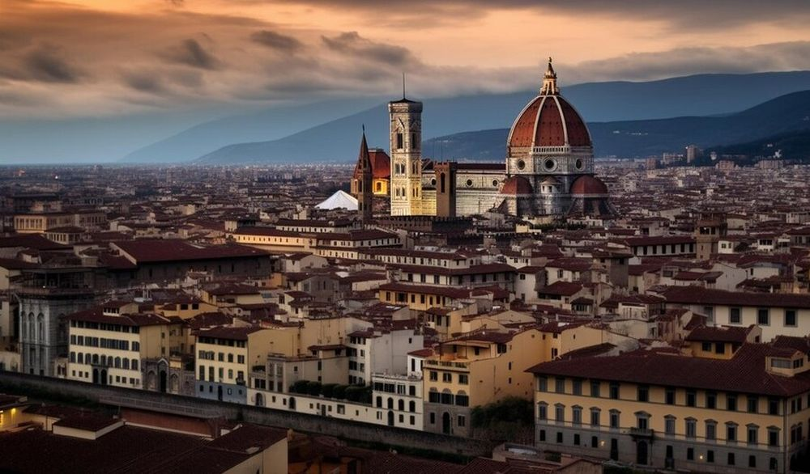

Descoperă Florența - O călătorie în inima Renașterii italiene
Florența este un oraș de referință în Italia, renumit pentru patrimoniul său artistic și cultural bogat:
-

Catedrala Santa Maria del Fiore - Arhitectură impresionantă
Un simbol al orașului, catedrala oferă o vedere magnifică de la cupolă.
-

Galeria Uffizi - Comoară artistică
O colecție impresionantă de artă renascentistă, găzduită într-un palat magnific.
-

Podul Ponte Vecchio - Punct de reper pitoresc
Un pod medieval acoperit cu buticuri, oferind priveliști spectaculoase.
-

Palazzo Vecchio - Centru administrativ
O clădire impunătoare și piața sa centrală animată sunt inima orașului.
-

Grădinile Boboli - Eleganță în aer liber
O grădină istorică impresionantă asociată cu Palazzo Pitti.
Concluzii
Florența păstrează vălul istoriei și al artei, captivând inimile vizitatorilor cu frumusețea sa.